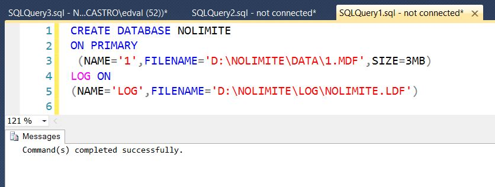
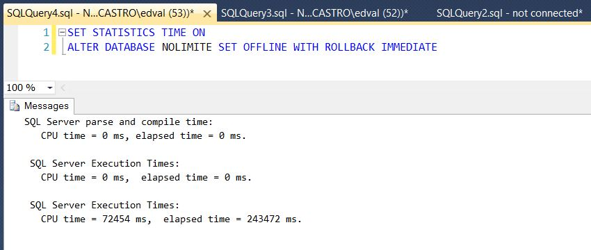

O erro.
Conforme previamente mencionado, o limite de arquivos por banco de dados em uma instância do SQL Server é de 32.767. Caso seja submetido um comando ou mesmo uma alteração gráfica para adicionar um novo arquivo a este banco, a mensagem de erro abaixo é exibida:
Simulando o erro.
Para simular o erro, foram criados alguns scripts e executado em um ambiente controlado, de teste. NÃO FAÇA NENHUM TESTE EM SEU AMBIENTE DE PRODUÇÃO! Clique aqui, para baixar o script completoCriação do banco de dados NOLIMITE
{kind=link}

Para a reprodução do erro, foi criado um banco de dados normalmente, com o menor tamanho de arquivo de dados possível, conforme imagem acima.Geração de script, e inclusão de 32766 arquivos
 Após a criação do banco de dados, foi gerado um script que faz a inclusão de 32766 arquivos ao banco, depois será acrescentado um único arquivo com a finalidade de validar o momento em que o erro acontece.
Após a criação do banco de dados, foi gerado um script que faz a inclusão de 32766 arquivos ao banco, depois será acrescentado um único arquivo com a finalidade de validar o momento em que o erro acontece.
O momento do erro.
 Ao se tentar incluir mais um arquivo no banco, o erro acima é exibido, informando que o limite (que já é bem generoso) foi atingido, impossibilitando a conclusão da operação.
Ao se tentar incluir mais um arquivo no banco, o erro acima é exibido, informando que o limite (que já é bem generoso) foi atingido, impossibilitando a conclusão da operação.
Prós e Contras.
Assim como no artigo anterior, [SQL Server No Limite] - Bancos de dados por instância, vou tentar fazer uma análise de prós e contras da utilização de uma quantidade elevada de arquivos, com resultados baseados em testes. É preciso lembrar, que isto é apenas a expressão de minha opinião e em nenhum momento, uma verdade absoluta.Prós
Sincera e particularmente, não consigo encontrar nenhum benefício na criação de uma grande quantidade de arquivos para um único banco de dados. Não é prudente afirmar que nunca deve ser feito desta maneira, mas em minha opinião, os contras são muito maiores do que os prós e não compensam o Overhead administrativo que possivelmente sera enfrentando com tal arquitetura.Contras
Maior tempo para operações de online e offline
 SET OFFLINE em um banco vazio (sem tabelas de usuário) com 2 arquivos.
SET OFFLINE em um banco vazio (sem tabelas de usuário) com 2 arquivos.
{kind=link}

SET OFFLINE em um banco vazio (sem tabelas de usuário) com 32767 arquivos. É possível observar que uma simples operação de colocar o banco em OFFLINE demorou 110ms em um banco "normal" com 2 arquivos contra 243472ms em um banco com 32767 arquivos. SET ONLINE em um banco vazio (sem tabelas de usuário) com 2 arquivos.
SET ONLINE em um banco vazio (sem tabelas de usuário) com 2 arquivos.
 SET ONLINE em um banco vazio (sem tabelas de usuário) com 32767 arquivos.
Uma operação de colocar o banco em ONLINE demorou 48ms em um banco "normal" com 2 arquivos contra 210351ms em um banco com 32767 arquivos.
SET ONLINE em um banco vazio (sem tabelas de usuário) com 32767 arquivos.
Uma operação de colocar o banco em ONLINE demorou 48ms em um banco "normal" com 2 arquivos contra 210351ms em um banco com 32767 arquivos.
Uso de memória (Buffer descriptors)
A utilização de memória é consideravelmente maior em uma base de dados com muitos arquivos, isto porque para cada arquivo, o SQL Server cria algumas páginas de controle que necessariamente são carregadas para a memória, como por exemplo:
-
- BOOT_PAGE - 1 página
-
- DATA_PAGE 5052 páginas
-
- DIFF_MAP_PAGE - 32668 páginas
-
- ML_MAP_PAGE - 32668 páginas
-
- PFS_PAGE - 32766 páginas
-
- SGAM_PAGE - 32670 páginas
Conclusão
Conforme já mencionei antes neste artigo, trata-se apenas de minha opinião e pode haver algum ambiente específico que necessite de bancos de dados com dezenas e até centenas de arquivos, mas acredito que quanto maior a quantidade de arquivos em um único banco de dados, maior vai ser o esforço administrativo necessário para administração deste ambiente, além disso, existem outras variáveis como criação de backup, restores (movimentação lógica de centenas de arquivos no restore), dentre outras. Muito obrigado pela leitura.Referências
-
- Maximum Capacity Specifications for SQL Server
-
- SQL Server: Understanding GAM and SGAM Pages